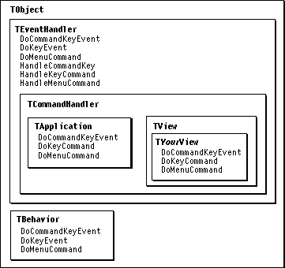

Overview
When a user presses a key while your program is active, the application object receives a key-down event from the operating system. The application passes the event to the target chain, as shown in Figure 5-2 on page 104. The event is passed from object to object in the target chain until an event-handler or behavior object in the chain handles the keystroke.If the key-down event is a Command-key combination, the application object automatically determines whether it is a keyboard equivalent for a menu command. The application doesn't check for keyboard equivalents that use other modifier keys, such as the Option or Control key.
Your application handles a menu command by overriding the
DoMenuCommandmethod in any event-handling or behavior class, including subclasses ofTApplication,TDocument,TView,TWindow, andTBehavior. (These classes already handle certain menu commands in their implementations ofDoMenuCommand.) You can specify a Command-key equivalent for a menu command by adding the key equivalent to the menu definition in your resource file, as described in "Defining Menu Contents With a 'CMNU' Resource," beginning on page 303.MacApp supplies the
TTEViewclass and a number of command classes for working with text entry. For more information on text editing, see "Editing Text" on page 246.Figure 20-1 shows some of the classes and methods MacApp uses to process keystrokes.
Simple Keystrokes
A simple keystroke is one that does not include a modifier key. Your application typically handles simple keystrokes by overriding theDoKeyEventmethod in an event-handling or behavior class. Your implementation ofDoKeyEventhandles any key event that has meaning for your application; otherwise, it callsInherited::DoKeyEvent. This allows other classes in the object's class hierarchy to handle the event. If none does, the event is passed on to the next object in the target chain, if there is one.Figure 20-1 Keystroke-handling classes and methods

Command-Key Combinations With Menu Command Equivalents
If a Command-key combination has a menu command equivalent, the application object calls theHandleMenuCommandmethod of the current target object, which in turn calls theDoMenuCommandmethod. For example, the Open command on the File menu has the command equivalent of Command-O. When a user types Command-O, the application object calls theHandleMenuCommandmethod of the current target object, passing thecOpencommand constant. (Command-key processing is described in detail in "Key-Down Events," beginning on page 110.)Command-Key Combinations With No Menu Equivalent
Your application handles a Command-key combination that is not equivalent to a menu command by overriding theDoCommandKeyEventmethod in an event-handling or behavior class. Command-key combinations are often handled in a subclass of the application class. In your implementation of theDoCommandKeyEventmethod, you respond to the Command-key combinations that have special meaning for your application and pass any other combinations down the target chain by callingInherited.Other Modifier Keys
Your application can respond to other modifier keys, including the Shift, Option, Control, and Caps Lock keys, by overriding theDoKeyEventmethod in an event-handling or behavior class. TheDoKeyEventmethod is passed the parameterTToolboxEvent* eventOne of the fields ofTToolboxEventisEventRecord : fEventRecord;TheEventRecordstructure contains information about the Toolbox event generated by the original keystroke, including the state of the modifier keys. Your override version ofDoKeyEventcan examinefEventRecordto determine whether a modifier key you are interested in was pressed. This is demonstrated in the code sample "Recipe--Handling a Keystroke Other Than a Command-Key Combination," beginning on page 480.The chapter "Event Manager" in Inside Macintosh: Macintosh Toolbox Essentials describes Toolbox events and the
EventRecorddata type.Function Keys and Other Extended Keyboard Keys
MacApp provides built-in support for handling the function keys F1 through F4 (Undo, Cut, Copy, Paste) and the Clear key on the numeric keypad. If no other object in the target chain responds first, the application object'sDoKeyEventmethod maps F1 tocUndo, F2 tocCut, F3 tocCopy, F4 tocPaste, and Clear tocClearand generates a call to theHandleMenuCommandmethod of the current target object, which in turn calls theDoMenuCommandmethod, passing the command constant (as it does for Command-key combinations with menu command equivalents).As a result, your application can respond to the function keys F1 through F4 and the Clear key by overriding
DoMenuCommandin an event-handling or behavior class and by looking for thecUndo,cCut,cCopy,cPaste, orcClearcommand constant.Your application can also respond to function keys in the
- Note
- The
TTEViewclass handles the command constantscCut,cCopy,cPaste, andcClearin itsDoMenuCommandmethod. When you useTTEViewor a subclass, you may not need to supply any additional code for these commands.DoKeyEventmethod of an event-handling or behavior class. Command constants for the function keys F1 through F15, the Esc (Escape) key, the Fwd Del (Forward Delete) key, and the Clear key are defined in the fileMacAppTypes.h. In your implementation ofDoKeyEvent, you compare thefKeyCodefield of the passedTToolboxEventobject to any of these constants to identify special keys your application is interested in.Scripting Note
Chapter 6, "Scripting," lists scripting issues to keep in mind while designing an application. Factoring the application (separating code that controls the user interface from code that responds to user actions, and breaking functions into discrete operations that can be implemented as separate tasks) is important in handling keystrokes, as it is for other user actions.Suppose, for example, a user presses the F2 function key (Cut) after selecting a graphic object in a window in your application. The application object's
DoKeyEventmethod calls the current target object'sHandleMenuCommandmethod, passing the valuecCut. Each object in the target chain gets a chance to respond to thecCutcommand number in itsDoMenuCommandmethod.The
TYourView::DoMenuCommandmethod handlescCutby creating a command object that knows how to perform the cut operation and send an Apple event to describe it. TheDoMenuCommandmethod sets the command'sfUseAppleEventfield toTRUE. When the command is executed, it first sends the Apple event (making the operation recordable and giving any attached script a chance to handle the command), then performs the specified cut (if no script intercepts the command).When an Apple event describing a similar cut operation is received from a script or an outside source, it is dispatched to your view object. The view's
DoScriptCommandmethod creates a command object of the same type as that created by theDoMenuCommandmethod. However, in this case it setsfUseAppleEventtoFALSE. (Actually,fUseAppleEventdefaults toFALSE, so no further work is required.) It also calls the command'sProcessmethod directly rather than post the command to the command queue. When the command is executed, it performs the specified cut operation but doesn't send an Apple event, because the command itself was created in response to an Apple event.If you follow this implementation strategy, cutting with the F2 function key will be a scriptable, recordable operation in your application.